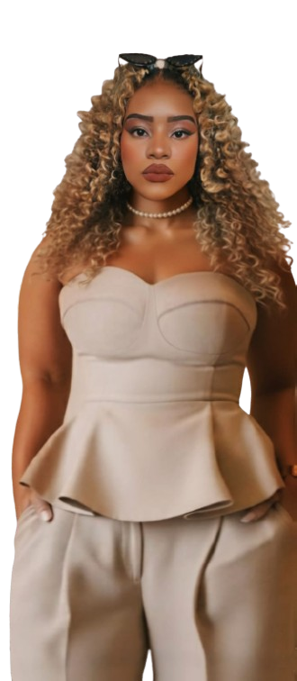
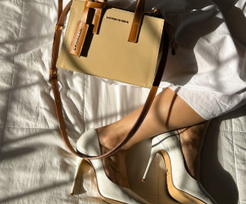
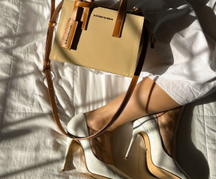

MAKE,
MODA &
MAGIA
EM CADA DETALHE, UMA HISTÓRIA E EM CADA LOOK, UM RECOMEÇO!

EM CADA DETALHE, UMA HISTÓRIA E EM CADA LOOK, UM RECOMEÇO!
No Make, Moda & Magia, ajudamos você a descobrir o seu brilho único,
explorando combinações que contam quem você é, mas com um toque
clássico de elegância. Para que você se sinta mais confiante, poderosa
e pronta para encantar o mundo.
 

O Estilo Elegante é a expressão máxima da sofisticação tranquila. Ele combina boas proporções, acabamentos impecáveis e escolhas conscientes. É um estilo que transmite postura, segurança e refinamento, sem exageros. Dentro dele, existem seis sub-estilos, cada uma com uma personalidade única, mas todas guiadas pela mesma essência: beleza equilibrada e elegância intencional.
Elegância atemporal.
Linhas limpas, peças tradicionais e cores neutras. Prefere
combinações discretas e impecáveis, que nunca saem de moda. Sua
força está na presença silenciosa.
Atual e autoral.
Gosta de linhas retas, cortes arquitetônicos e peças com design
contemporâneo. Traz personalidade com minimalismo e inteligência
visual.
Elegância atemporal.
Linhas limpas, peças tradicionais e cores neutras. Prefere
combinações discretas e impecáveis, que nunca saem de moda. Sua
força está na presença silenciosa.
Suavidade com maturidade.
Tecidos fluidos, detalhes delicados e movimentos leves. É feminina
sem infantilizar; prefere charme discreto e beleza natural.
Sedução com classe.
Valoriza o corpo com intenção e equilíbrio, usando shapes que
desenham a silhueta sem exageros. A sensualidade é refinada, segura
e marcante.
Autoral e refinada.
Explora cores, formas e ideias de maneira sofisticada. Usa
criatividade de forma controlada e harmônica, sempre mantendo um
visual bem pensado e original.
Acreditamos que a verdadeira beleza
nasce da confiança
e da coragem de cada mulher ser quem
realmente é. Pensando nisso, criamos
um um sistema que conecta autenticidade,
elegância e estilo pessoal.
Nele você encontra um espaço com uma tela para relembrar seu
estilo elegante, com as melhores dicas de look e maquiagem.
Encontra um jogo da memória para revisar combinações de forma
divertida, onde você pode testar combinações sempre que quiser.
E por fim, uma dashboard exibe sua pontuação, criando uma
experiência intuitiva e personalizada.
Proprietária do Make, Moda & Magia, eu Mayara Longuinho
de 24 anos, encontrei em um momento difícil da minha vida,
uma paixão pela moda elegante e clássica que fez com que
eu me reerguesse, encontrando um mundo mágico na moda.
Com isso, percebi que assim como eu, todas as mulheres
merecem encontrar sua melhor e mais incrivel versão por
conta do jeito de se vestir, sem deixar de ser quem são.
E com esse projeto, tive a oportunidade de integrar
minha futura carreira na tecnologia com o meu maior hobby.
Foi algo que transformou minha vida e que fez com que
eu tornasse referência e inspiração para algumas pessoas.
Mas que acima de tudo, fez com que eu encontrasse meu valor.
Ser um espaço de transformação, onde
cada mulher descobre seu estilo, sua
essência e sua própria magia.
Revelar o brilho único de cada mulher por meio da moda e da maquiagem, inspirando confiança e autenticidade.
Cultivamos valores que inspiram: confiança, autenticidade e a liberdade de ser quem você é.
Leia abaixo, o relato da Camila Rodrigues, uma das primeiras a
utilizar meus conselhos de moda.
Ela mudou totalmente o seu estilo, hoje se veste dessa maneira
incrível e usa a maquiagem para realçar sua beleza natural.
“A fundadora da Make, Moda & Magia - minha prima Mayara, foi uma
inspiração para mim. Através do seu jeito de se vestir com postura e
elegância, fez com que eu me espelhasse nela e moldasse
o meu estilo”